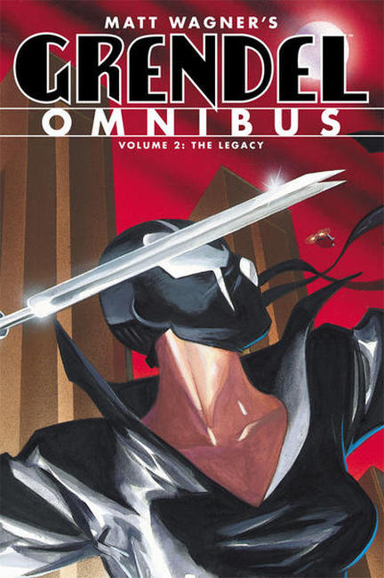
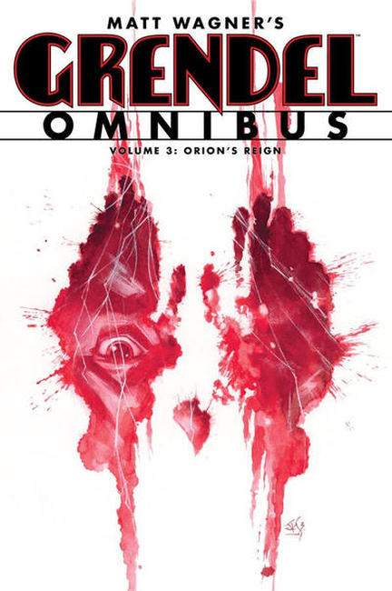
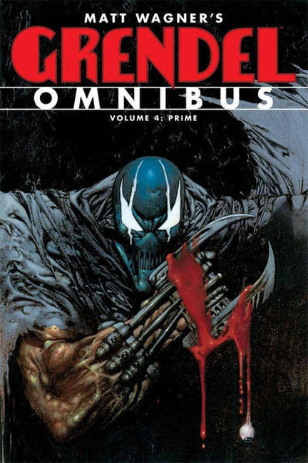
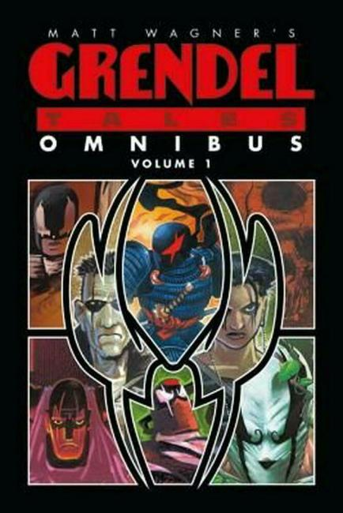
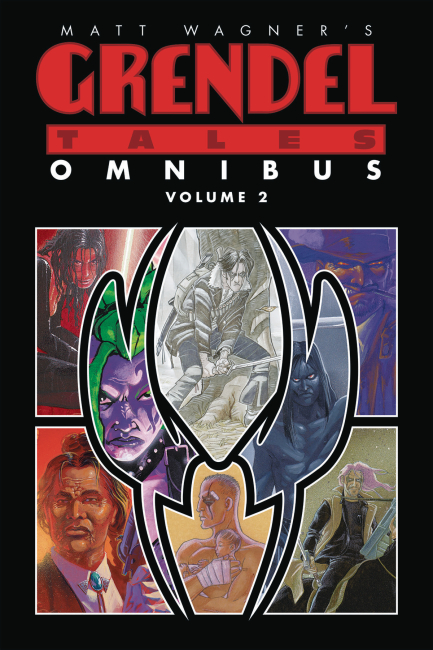
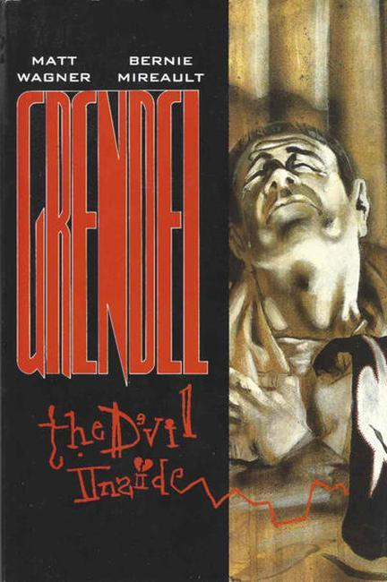

×






❮
❯
Grendel is a long-running series of comic books originally created by American author Matt Wagner. First published by Comico, Wagner later moved publication of the series to Dark Horse.
Dark Horse Omnibus Collections:
Vol 1 – Hunter Rose (2012)
- Grendel: Devil by the Deed 25th Anniversary Edition
- Grendel: Black, White & Red #1–4
- Grendel: Red, White & Black #1–4
- Grendel: Behold the Devil
- Decade: A Dark Horse Short Story Collection
- Issues #49–50 of Dark Horse Extra
- Dark Horse Maverick 2001
- Liberty Annual 2011
Vol. 2 – The Legacy (2012)
- Grendel: Devil Tales
- Grendel: Devil Child
- Grendel: Devil’s Legacy
- Grendel: The Devil Inside
Vol. 3 – Orion's Reign (2013)
- Grendel: Incubation Years
- Grendel: God and the Devil
- Grendel: Devil's Reign
Vol. 4 – Prime (2013)
- War Child
- Devil Quest
- Past Prime (2013)
Grendel Tales Vol. 1
- Devil Worship
- Four Devils
- One Hell
- Devil's Hammer
- The Devil in our Midst
- Devils and Death
Grendel Tales Vol. 2
- Homecoming
- Devil's Choice
- The Devil May Care
- The Devil's Apprentice